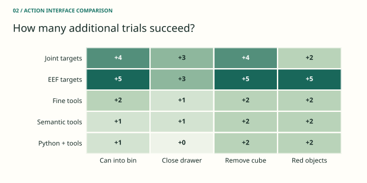
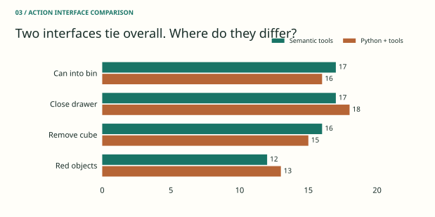

Contents
Key takeaways
- On hardware, we first noticed the pauses. In our September grasp trials, the arm often stopped between GPT‑6 Astra’s pose commands. The team found tasks easier with semantic tools. To assign that idle time to model requests, we still need synchronized request and motion timestamps.
- One simulation failure can already be checked. At about 207 g, both runs executed nine tool actions without a reported motion error. Both failed to put the juice in order. Inspect the six trials.
- The next hardware test separates two benefits. Does a semantic grasp only save model turns, or does it also improve recovery from a miss? See the same miss through both interfaces and the held-out composition. The hardware comparison charts use illustrative values.
Introduction
A language model can send an end-effector pose or ask an executor to grasp a blue block. Either instruction can close the gripper. They differ in who chooses the contact point, who checks the grasp, and when a missed grasp becomes visible. We examine those decisions on Piper and train a local student to use the same tool interface.
The evidence includes qualitative observations from our September hardware trials, thirteen real workbench recordings, and scored simulation runs. The recordings document object motion. The controlled hardware comparison across two model generations and five interfaces still awaits trial-level logs. Its charts are labeled illustrative. Section 3.4 includes two further simulation replays of Skywalker 2: a single-robot placement and a two-robot relay.
To ask what a model update changes, follow one interface from one model generation to the next. To ask what an abstraction buys, hold the model and layouts fixed and move between interfaces. A third question concerns the timing of evidence. Two policies may finish the same number of trials, but one may discover an empty grasp before it leaves the table while the other discovers it over the bin. Those policies offer quite different opportunities for recovery. That last comparison needs an execution trace. We use a separate simulation record for the question about distillation, where the object of comparison is the student's weights.
1. Study design
1.1 Tasks and evaluation settings
The proposed comparison uses one Piper, a fixed calibration, matched starting observations and identical instructions. Four tasks probe different weaknesses: grasp and release for a can, contact tracking for a drawer, clearance on a tray and target binding among red objects. Mark 20 layouts per task, photograph each reset and rotate condition order within a layout.
The can task links localization, approach and release. Getting the can off the table is an intermediate achievement; it can still strike the rim or fall outside. Reaching a point above the bin is therefore an unsuitable early stopping rule. Closing a drawer produces a different contact. The fingers can arrive close to the handle and still fail to push along the slide. We want to see the front panel move relative to the cabinet and see what happens when the arm releases it. One task contains a freely moving object, the other a constrained joint. A similar final hand-position error does not have the same physical meaning in both.
The cube on a tray forces the gripper through limited lateral clearance. An initial and a final frame alone could conceal an approach that scraped the tray and happened to carry the cube out anyway. The red-object task keeps multiple nearby instances in view. The policy must bind an instruction to an instance before moving, then identify what is left after the first transfer. These tasks give an interface change a chance to help locally and hurt elsewhere. On one convenient can layout, a single adjustment to the final approach could be enough to reorder all the methods.
The box starts on the left and the can on the right. Follow the can through the lift, then check where it rests after release.
The can recording makes the task criterion visible: the can must lift with the hand, clear the rim and remain in the bin after release. Standard tasks use objectives from the original seven training tasks. Randomization changes the initial arrangement. OOD below denotes an objective or composition outside those seven instructions.
1.2 Models, action interfaces and evaluation conditions
- Joint targets
- Six joint targets and a gripper command. The model chooses the arm configuration; the local controller checks limits and tracks it. Proposed at the meeting.
- EEF targets
- A base-frame end-effector target, orientation and gripper command. Local IK solves for joints. Fresh images and measured pose follow each segment.
- Fine tools
- Separate localization, approach-point selection, alignment, descent, closure and lift. The model can inspect each primitive’s return before continuing.
- Semantic tools
- Bundle stable steps over the same perception and control primitives. A grasp takes an object, approaches, closes and returns holding feedback.
- Python + tools
- Expose the same semantic tools, but let the model write conditions and retries in a program. Live returns drive branches; completion or an error returns a trace to the model.
Score the task end state and record wrong grasps, collisions, protective stops and timeouts separately. Match speed, workspace, low-level step limits and wall-clock limits; charge actions inside tools and Python loops to the same budget. Keep instructions and camera evidence fixed apart from the required action schema. Pin and record the exact model endpoints and inference settings for the hardware comparison.
1.2.1 Layout resets and paired trials
Two physical resets rarely produce pixel-identical worlds. We would keep a reference top view for each layout, along with container orientation, initial gripper configuration and a layout identifier. After resetting, photograph the scene before querying a model and compare the critical clearances and occlusions. If the can is tipped over or the drawer starts at the wrong opening, reset it and log the reason. If the difference is discovered only after sending the task, retain the original result and flag the event. Difficult layouts are often difficult both to restore and to solve; silently dropping them would change what the experiment measures.
Five interfaces, two models, four tasks and twenty layouts per task make eight hundred planned trials on eighty distinct physical layouts. The eighty trials in a condition have a clear denominator. The ten attempts on one particular layout do not constitute ten independent scenes. Rotate the method order within each layout and record interruptions, recalibrations and equipment changes. If hardware time runs out halfway through a day, finishing all the conditions on fewer layouts gives a more informative comparison than giving one model all of the easy morning runs. It also leaves a clear list of which paired conditions remain.
1.2.2 Shared constraints for joint and pose control
With a joint target the model has to choose a wrist orientation, an elbow configuration and a reachable point in joint space. A pose target delegates part of that work to inverse kinematics, but the camera frame, robot base and flange-to-tip offset still need an explicit convention. Both interfaces share the same limits and speed constraints. An inadmissible request uses a decision from the budget. We retain the requested numbers, the target the controller accepted and the measured endpoint. An unissued action and a rejected action look deceptively similar in video: the arm stays still in both.
Watch the wrist first and the object second in this pair. If the joint command brings the hand close, the dominant error may lie in its final orientation. If the EEF command leaves the hand far away, check whether IK admitted the target. Adding a hand-designed intermediate waypoint for one policy would change the comparison. A more informative follow-up would start at the first failed command in each trial, hold the observation fixed and inspect the consequences of changing the representation. That would test a particular failure in converting an image into a target rather than repeat a whole episode and hope for a different outcome.
2. Results
2.1 End-effector control and tool use
2.1.1 Overall performance and scoring
Show all counts
| Interface | Can into bin | Close drawer | Remove cube | Red objects | Total |
|---|---|---|---|---|---|
| Joint targets | 6 / 10 | 9 / 12 | 5 / 9 | 2 / 4 | 22 / 35 |
| EEF targets | 13 / 18 | 14 / 17 | 11 / 16 | 5 / 10 | 43 / 61 |
| Fine tools | 11 / 13 | 12 / 13 | 10 / 12 | 6 / 8 | 39 / 46 |
| Semantic tools | 17 / 18 | 17 / 18 | 16 / 18 | 12 / 14 | 62 / 68 |
| Python + tools | 16 / 17 | 18 / 18 | 15 / 17 | 13 / 15 | 62 / 67 |
Suppose the hardware retest looked like Figure 1. With GPT‑6 the pose and semantic interfaces finish 43 and 62 of 80 trials, a gap of 19. With 6.2 the counts would be 61 and 68, a gap of seven. A defensible reading would be that the interface gap narrowed on these tasks. Rerunning only direct control would miss the improvement on the tool route itself.
In the illustrative 6.2 results, both interfaces reach 18/20 on the can. Red objects give 10/20 versus 14/20. Inspect paired layouts for target swaps and collisions with neighbors during approach. A net difference of four cannot tell us which individual trials the methods won or lost.
2.1.2 Task-level changes and cube removal
An overall success rate orders methods but does not locate a gain. The next figure subtracts GPT‑6 from 6.2 within every interface and task. Twenty layouts per cell means that a single additional success moves a cell by five percentage points. The EEF row gains five, three, five and five successes. Semantic tools gain one, one, two and two. For several tasks the semantic row starts quite close to twenty. Inspect that starting value before attributing a steeper slope to one interface: a method with only three failures left has less room to improve than one with nine.


The tray illustrates the difference. In the example the EEF interface rises from eleven successes to sixteen, while semantic tools go from sixteen to eighteen. Suppose both clips show the hand getting close to the cube. Does the newer model choose a better initial landing point, or does it make a better correction after first touching the rim? The first account points to spatial localization and the second to feedback. The final score fits either description. The missing piece in a useful clip is the interval between first contact and the next command, including the image that was actually available for that decision.
The hardware recordings below show the same objective on clear and cluttered tables. Compare the rim and landing area directly. The model-generation scores in the chart are illustrative.
A single blue block sits inside the tray. Pause at lift and placement to distinguish clearing the rim from coming to rest on the table.
The goal is still to remove the blue cube. Other blocks and small objects now occupy space outside the tray. Compare the chosen landing area with the clear-table recording.
2.1.3 Paired outcomes on the same layouts
The paired figure gives one hypothetical joint outcome consistent with the totals. Fifty-eight layouts succeed under both interfaces. Nine defeat both. The thirteen disagreements are the most informative for a choice between interfaces: ten favor the semantic tool and three favor direct poses. Subtracting the two counts gives seven, but thirteen pairs of recordings deserve attention. Showing only the ten tool-only wins would hide the cases in which the abstraction itself could have introduced a constraint. The layout-level outcome is additional information designed for this illustration; it cannot be inferred from two aggregate success counts.


One way to choose counterexamples is to order the EEF-only wins by layout ID and select the first with complete command and return evidence. Apply the same rule to the tool-only wins. On the former, ask whether the harness ruled out an oblique approach the arm could actually execute. On the latter, ask whether local motion control absorbed a small error in the requested target. These are questions to put to the replay, not its predicted answers. If the first difference instead turns out to be an inconsistent reset, label it as such and keep it in the accounting. It would make a poor demonstration of either policy's spatial judgment.
2.1.4 Failures shared by both interfaces
Cases in which both methods fail can help decide whether another model is the right experiment. If the object disappears behind the gripper at the same point in a tight layout, varying the available view may be more informative. Or one method may consume its budget while the other correctly selects the object and then contacts a neighbor. Two zeros do not establish a common difficulty. The full record should identify the task criterion, the first observable deviation and the event that ended the trial. An error message from the last of those three events should not overwrite what was visible much earlier.
2.1.5 Summary
Aggregate counts can hide wins in opposite directions. The tray recordings show how clearance changes with layout. Comparing model generations requires paired outcomes under the same layout and interface.
2.2 Tool granularity and execution cost
2.2.1 Call sequences for the same grasp
Suppose the instruction is to lift the cube out of the tray, and the first closure leaves it there. These are interface sketches over the same primitives, with illustrative function names. The example is outside the trial count.
target = locate('cube')
approach = pregrasp(target)
move_to(approach)
align(target)
descend(target)
close_gripper()
lift_short()
read_holding()Each line is a tool call. The stepwise agent reads its return before issuing the next.
target = locate('cube')
result = grasp(target)
# result.holding = falseThe grasp uses the same approach, alignment, closure and test lift locally. A negative holding result leaves re-localization to the model.
Both sides physically close, lift and receive the same holding evidence. With fine tools the model carries identity, orientation and retry state across turns. With a semantic grasp the executor maintains that state inside one call. Any extra grasp inside the tool must count against the same attempt budget.
Our discussion favored a small set of semantic tools, but two explanations compete. The model may save several fragile coordinate hand-offs, or the grasp implementation may contain a better localizer or hidden retries. Counting tool names cannot distinguish these effects.
| Decision interface | Success | Median decisions per trial |
|---|---|---|
| Fine tools | 39/80 | 15 |
| Semantic tools | 62/80 | 7 |
| Python + tools | 62/80 | 3 |
Python and stepwise semantic calls happen to tie in this example. A program can prewrite a holding check and branch immediately after a miss. An inaccurate holding signal also sends it down the wrong branch sooner. The useful record contains model decisions, low-level executions and evidence for the holding check. One generated loop can conceal three grasp attempts.
For a clean retest, expand a semantic call into its primitive trace. Match the localizer, holding threshold, approach path and retry allowance, then let GPT sequence those primitives. If the gain appears only when local re-localization is enabled, credit that change to the executor.
2.2.2 Failure attribution and target binding
We need to separate perception from action to make the September experience testable. When instructed to pick up a red object, the agent chooses how to describe it, a localizer binds that description to an instance, and the motion tool chooses how to approach. The first description could be wrong. A correct description could yield a mask containing a neighbor. Both could be right and the finger could still hit the adjacent potato on descent. A single return saying that the grasp failed gives us no good basis for assigning responsibility to the model, the visual pipeline or collision geometry.

The illustrative failure chart gives one primary category to each failed trial. The primary category is the earliest deviation supported by an observation; subsequent events can appear as annotations. Thirty-seven failures with GPT‑6 EEF and eighteen with semantic tools reconcile with Figure 1. A fall in the number labeled localization would not itself establish that the localizer improved. The coarse tool may simply defer committing to a pose and receive a fresher frame. A follow-up could freeze both interfaces at the same observation time and replay target binding. See whether the first divergence survives that control before attributing the gain to perception.
2.2.3 Arrival, holding and release criteria
To revisit the juice case on hardware, weigh the container and record the grasp height. Pause the overhead and side views at the first short lift. At that same timestamp, compare the command and tool return with the bottom of the container. Did it leave the table, follow the hand, then drop in transit? Mark the frame as inconclusive if the wrist hides the object. A clip of the final second alone can make a miss, a slip and a roll after release look like the same failure.
Compare a single red target with a table containing several red objects. At the next approach, check whether the intended target can still be distinguished. These recordings identify the scenes but lack trial-level labels for the fine and semantic interfaces.
This setup has a single red target. Follow it from the right side into the container on the left, then inspect its position after withdrawal.
A red block and a strawberry-shaped object both match the color instruction. Yellow and blue objects share the workspace. Follow the block to the basket, then watch which object the gripper approaches next.
2.2.4 Branching and state across turns
After a missed grasp, a stepwise agent waits for another model turn to decide whether to query the object again. A program can check a holding flag and take a local branch immediately. That saves a round trip while increasing reliance on the meaning of the return. If the only feedback means “the command raised no error,” a prewritten conditional might never enter its recovery branch. This is why Python and the stepwise semantic agent share the very same tools in the design. Giving the program a better holding detector would vary two things at once and make a speed or success difference hard to interpret.
Three inverted cups hide parts of the table. Pause before a lift, then inspect the newly exposed area. Which locations have already been checked? Once a cup moves, “the one on the left” stops being a reliable identifier. The yellow piece is visible in the red dish near the end.
Keep the full interval from the first miss to the next reliable observation in the program replay. Did the retry obtain a new target position or reuse the last successful localization from a cache? Did it keep trying the same object? Our cup diagnostics illustrate the distinction. Ordering the visible cups from left to right can distinguish three instances within a frame. After one cup is moved, the new leftmost cup need not be the previous leftmost cup. Separating instances in one image and remembering which one was inspected across actions are different capabilities. A loop written once can magnify a mistake in either one.
2.2.5 Decision latency and wall time
The September observation was a stop–start rhythm under direct pose control. A normal-speed clip with timestamps should make the pauses visible. Log four events: request sent, actionable reply received, motion started and tool returned.
| Interface | Median cumulative model wait | Median wall time |
|---|---|---|
| EEF targets | 47 s | 76 s |
| Semantic tools | 23 s | 54 s |
| Python + tools | 15 s | 48 s |
Sum request waits within each trial before taking the median. Wall time runs from instruction to stop. Subtracting the two medians does not recover motion time. If inference overlaps movement, align the intervals to distinguish inference latency from time the arm truly stood idle.
A query from request to actionable response can span image processing and network waits. A tool call from dispatch to return can include local perception, movement and settling. It is tempting to label both intervals as time for which the arm waited. For each clip we would align three clocks: the start and end of the model request, dispatch and completion of the motion command, and movement visible to the camera. The first two come from software. The third can expose queuing or buffering between software activity and actual physical motion. All three must refer to the same trial and continuous interval.

Consider transport after the can has been gripped. A local program could dispatch a move immediately. A stepwise agent might first inspect a frame to confirm holding and only then ask for the next command. Omitting the frame could save time at the cost of noticing a slip later. Separate two situations in the replay: waiting to obtain evidence, and waiting for a decision after evidence is already present. Eliminating a model call may not help the first. For the second, an explicit condition in code is a sensible alternative to test. A sped-up demonstration makes both pauses look inconsequential, hence our request for original-speed footage.
The basket recording preserves the pace from contact at the rim to displacement. It documents physical motion. Assigning a pause to model latency also requires request timestamps from that trial.
Use the edge of the table as a fixed reference for the red basket. After the arm withdraws, check whether the basket stays in its new position.
The termination policy influences median trial time. A method that immediately reaches a joint limit and gives up may appear faster than one that uses its full retry allowance. Report completion time on successful trials alongside wall time and timeouts over all planned trials. Keep protective stops in the denominator. Under a wall-clock limit, a practical comparison is how many runs have genuinely reached their task end state by the same deadline. That distinguishes quick abandonment from quick completion. It also matters to a person operating the bench who must reset the scene after a failure, even if that reset falls outside the episode clock.
If inference and motion overlap, cumulative request time still measures service use but no longer explains the length of the video by itself. Suppose lifting takes three seconds while the model spends two of them preparing the next command. The arm may never stand idle. But if the object slips during that lift, the prepared command is based on outdated evidence and needs checking before commitment. Preparing a simple, reversible move early may be worthwhile. Waiting for a later frame before closing or releasing the gripper can be worth the delay. The trade-off lies in a particular segment, not in one average model-call rate.
2.2.6 Summary
Bundling primitives can change model-turn counts without changing physical attempts. Count both and align request and execution timestamps to measure how long the arm actually waits.
2.3 Randomized layouts and held-out compositions
2.3.1 Simple and randomized initial layouts
The external views show release in both stacking layouts. Pause at placement and after the fingers clear the object to check whether the lower block supports the upper one. Estimating a randomization effect requires matched model runs.
Red and green blocks start apart. Once the hand retreats, the lower red block must support the upper green one. Compare the first placement with the randomized-layout clip.
A held block can look perfectly stacked. From the side, watch for a gap between the fingers and the green block as the arm withdraws. Does the upper block stay supported once the hand has left?
2.3.2 Stage criteria for composed tasks
Clearing the orange cup frees the destination for the red block. Sorting red and blue blocks requires tracking which objects remain after each placement. The recordings illustrate an action precondition and cross-turn object identity. The cube-and-drawer experiment below is a separate proposed holdout.
An orange cup initially occupies the blue tray. Check when the cup actually leaves the tray, then follow the red block into that same space. Clearing the destination makes the second placement possible.
Four blocks are sorted between a white tray and a black box. After each placement, look for the remaining block of the same color. Jump from a blue-block transfer to a later red one, then inspect both containers in the final view.
2.3.3 Interfaces on a held-out instruction (illustrative)
Our proposed held-out instruction is to transfer the cube from the tray into an already-open drawer and then close it. Cube removal and drawer closing were exercised separately. The combined instruction and its layouts are held out from interface development. OOD refers to that composition; prior exposure during model pretraining is unknown.
Both frozen interfaces support grasping, moving, release and pushing. Neither receives a task-specific routine for loading the drawer. Twenty new layouts crossed with two models and two interfaces add 80 planned trials, separate from the 800 main trials. The cube must remain inside, the gripper must withdraw, and the drawer must stay closed. Placement without closure is partial progress.
| Model | Main · fine / semantic | OOD · fine / semantic |
|---|---|---|
| GPT-6 Astra | 39/80 · 62/80 | 0/20 · 10/20 |
| 6.2 Astra | 46/80 · 68/80 | 1/20 · 13/20 |

In this illustrative outcome, fine tools finish zero trials with GPT‑6 and one with 6.2; semantic tools finish ten and thirteen. Compare the cube's first lift, release, and the decision to switch to pushing. A fine agent might succeed at lifting but spend its remaining budget re-establishing intermediate state. A semantic agent might grasp correctly and still release the cube where it jams the drawer. These are competing trace-level explanations to test on hardware.
2.3.4 Controlling for sequence length
Retrieving a cube and then closing a drawer adds hand-offs. Even unchanged per-step reliability can reduce whole-task success as a sequence grows. To isolate novelty, add a familiar composition with a similar number of primitive actions. Match the view, action budget and retry allowance, and count every regrasp inside a semantic tool.
For each interface, keep the denominator at all 20 layouts and report three cumulative counts: cube lifted clear, cube still inside after release, and drawer held closed after withdrawal. A gap at the second event points us toward transport and release. Similar counts through placement followed by a gap at closure would send us to the push and remaining budget. These stage counts await hardware trials.
2.3.5 Summary
A failed episode may break at retrieval, release or closure. Stage counts for each layout are needed for the hardware comparison. The illustrative table shows how those outcomes would be reported.
2.4 Distilling tool use in simulation
2.4.1 Training data and supervision
The tool interface also gives us a student training target: what the teacher saw, called and received. In Piper simulation we exported 667 base trajectories and 374 recovery branches, 1,041 in total, from GPT‑6 Astra for Qwen3.5‑4B. A loader check caught a case where the original file contained a tool call but its contents did not reach supervision. Checking the request and its execution matters for training too.
| Policy | Successes / trials | SR |
|---|---|---|
| Qwen3.5-4B | 33 / 450 | 7.33% |
| Qwen3.5-4B · SFT | 150 / 450 | 33.33% |
| GPT-6 Astra | 311 / 450 | 69.11% |
The student gains a net 117 successes, evidence that part of the tool-use behavior transferred. Choosing between two hardware interfaces still requires the paired experiment above. The export retained review labels and included 27 previously rejected records, a qualification when interpreting data quality.
Giving a small model the video of a grasp does not by itself produce a tool-use label. At the seventh decision the student should receive the evidence that was genuinely available from the preceding six steps and the image preceding step seven. The target is the request the teacher issued then. Suppose the executor re-localizes after receiving that request, shifts the landing point and finally grips the can. That new point belongs in the execution trace. Backfilling it into the earlier teacher answer would make later evidence available at training time. The resulting example could look clean while being impossible to reproduce at deployment.
Recovery branches make the issue particularly visible. A branch must inherit the intended parent and the intervention must actually alter the world. We encountered a restored tool binding that reverted to an earlier registry, as well as the risk of a cached pre-fault image disagreeing with the post-fault scene. If a teacher sees the old frame but is expected to respond correctly to the fault, even an eventual success makes an ambiguous example. Store the parent checkpoint, intervention result, current frame supplied to the teacher and subsequent tool returns separately. Only then decide which turns supply new supervision and which provide inherited context.

The increase of 117 student successes is the net difference between two totals under the same native task criterion. Dividing the increase above baseline by the teacher's lead over baseline gives about forty-two percent. This describes one aggregate. It does not identify which particular teacher behaviors transferred and it cannot be carried over as an estimated hardware retention rate. A large gain on pushing a basket can raise the headline score while a task requiring a particular multi-object arrangement remains unsolved. Task-level outcomes belong alongside the aggregate whenever the question changes from how far the student improved to which abilities it acquired.
Trajectory length has two equally defensible interpretations. Recorded simulator time tells us how long execution lasted. Waiting for teacher calls describes a different cost. Recovery data also inherit parent context, so a shared prefix should not count twice as independent experience. Our export once contained the tool calls in the original files while the loader omitted the corresponding supervision. Before debating how much can be learned in a certain number of episodes or hours, inspect the actual images, arguments and loss masks seen by the student at each turn. Counting material that never reaches the loss does not establish that it trained the model.
2.4.2 Summary
The student moves from 33/450 to 150/450, a gain of 26 percentage points. The teacher reaches 311/450 under the same simulation criterion. This comparison measures learned tool behavior. Hardware interface performance requires its own measurements.
3. Discussion and outlook
3.1 Main findings
Direct poses let the model commit to each geometric target. A semantic tool can keep approach, closure and holding checks within a local execution. A successful return can also hide an error in one of those steps. Hardware recordings expose object motion. Synchronized tool traces are needed to locate the first divergence.
3.2 Failure modes and diagnostics
3.2.1 Payload variation and slip on lift
For our simulated apple-and-juice ordering task we kept two layouts and one fingertip grasp, varying the modeled container mass. Each script ran nine tool actions. Both layouts passed at roughly 69 g and 138 g. Both failed at about 207 g. All six motion-error logs were empty.

Download the six trial records (CSV)
The first lift explained why the errors column was a poor guide. Inspection at grasp, lift and the final frame showed that the heavier container failed to travel with the gripper and remained at its starting point. If a tool only reports that the hand reached its pose, the agent has little reason to retry. That gives us a concrete question for the fine and semantic tools below: after the hand lifts, do both interfaces reveal whether the object followed? Six scripted simulation runs at three masses in two layouts cannot establish the hardware payload limit.
3.2.2 Fingertip transforms and interference from neighboring objects
In one failed red-object scene the tomato had been located correctly, yet the grasp tool missed its descent target. Comparing segment orientations against the requested fingertip trace revealed a stale transform: the tool used the preceding orientation to convert the tip offset, and the planner then selected a different tilt. The fingertip drifted sideways by about 5.4 mm. Asking the teacher to identify the tomato again would leave this error intact.
We synchronized the orientation and fingertip conversion per segment. In two historical scenes all 14 actions ran and the task stayed successful for ten check steps. Only one of two fresh layouts succeeded: the other approach hit a neighboring potato. We then added a neighbor check using the current RGB-D view. The traces explain a specific executor fix, while the new layouts show why two repaired scenes cannot establish a hardware success rate.
The hardware clip shows how a neighboring object can intrude on the approach. Watch whether it moves during the lift. This camera view cannot resolve the millimeter-scale error measured in simulation.
The red block starts between blue and yellow objects, with a black box across the table. Watch where the fingers enter and what moves on lift. The final view shows where the block lands; assessing clearance requires the approach footage.
3.2.3 Verifying the end state after contact
Look at the front panel after release rather than the last forward push. From an oblique camera the fingers can hide the cabinet edge, and overlap in the image can resemble a flush closure. An independent side view can support retrospective scoring; if the model did not receive it, do not assume that it had the same evidence. A model declaration of completion is also distinct from a physical success condition. In our recovery records a teacher could announce completion early while the original condition remained false. Such a run helps locate where the loop lost contact with the task state.
Compare the opening before the push and after the hand clears the front. The gripper briefly hides the panel during contact.
We also want the interval in which the world contradicts an otherwise plausible tool prediction. In simulation we could start from a closed drawer, reopen its slide, verify that the original success flag changed from true to false and then show the teacher the post-fault image. The intervention has a known trigger. If a real drawer happens to reopen and the footage contains no controlled intervention, describe it as a natural failure or recovery. Both clips might look like “the drawer opened again,” but only one establishes what changed and exactly when the policy first had evidence about it.
3.3 Limitations and future work
First collect the four cells crossing GPT‑6 and 6.2 with EEF and semantic control on the same layouts. That directly tests whether the September observation survives the model change. Then add joints, fine primitives and Python; the last two especially need tool-internal traces so fewer model calls are not mistaken for fewer robot attempts.
Evidence that overturns the working hypothesis belongs in the report. If fine tools catch up after matching budgets and localization, credit more of the gain to the execution code. If the newer model catches up on a single object but still swaps occluded neighbors, investigate target binding next. The final report should include paired wins and losses, failures, protective stops and the calibration, payload and controller settings to which the comparison applies.
One possibility is that the newer direct pose interface catches semantic tools on simple objects and gains unique wins when a tool fails to bind its target. In that case retaining lightweight direct poses and requesting geometry only when needed would merit testing. Another is that semantic calls remain best until fine tools receive the same local re-localization routine, after which the gap disappears. That would shift attention from prompting or scheduling toward better reuse of the executor. Either result would move the design forward. A collection restricted to favorable runs of one preferred policy could support neither conclusion.
A simpler possibility is that the remaining interface difference is smaller than the variation from two independent resets. The first finding to report would then concern layout, lighting or calibration. With twenty starts per task a single trial changes a percentage by five points. A broader claim needs independent layouts, separation of single- and multi-object conditions, and uncertainty that respects pairing. For the present comparison the most useful question remains one a reader can inspect: take one particularly attractive success, replace its output interface on the same layout, and find the first decision at which the two runs genuinely differ.
Figures 1–5 (including OOD Figure 4b) and Tables 1, 2 and 4 are illustrative. Counts, latencies, decision totals, the 20 layouts per task and derived differences are designed examples. Qualitative observations about GPT‑6 and tool granularity come from the November 24 discussion of September trials. The 6.2 Astra and direct-joint conditions were proposed for follow-up.
Diagnostic S1 records a completed simulation mass-sensitivity test. Figure 6 and Table 3 use the same Piper simulation evaluation. The workbench recordings come from the pre-November 17 EICaP hardware archive. Matched comparisons still require recordings linked to layouts, interfaces and model versions before the illustrative values can be replaced.
3.4 Cross-embodiment transfer and multi-agent coordination
What carries over if Piper and Skywalker 2 both receive the instruction “put the block in the box”? Start with what an observer can score: the object stays inside after release. We can apply that check to Piper’s can placement earlier in the article and to the humanoid simulation below. Gripper closure, approach direction and wrist pose depend on the body. A transfer test would keep the GPT policy, object, destination and success condition fixed while swapping in each robot’s grasp and placement tools.
At 8 seconds the block rises with the hand. At 11 seconds the hand has moved away and the block remains in the box. These frames let us check the grasp and the placement separately.
With two robots, who gets to move next? The opening placements in the sorting clip can run in parallel. Then a blue block is on A’s side while the blue basket is on B’s. A stages the block on the table for B to collect. The same object links their two actions. For two independently deciding agents, we would have A announce the object ID and relay position. B would confirm from its own view that the block is down and A’s hand is clear before collecting it, or request a fresh location if it has slipped.
Follow the blue block labeled item3. At 9 seconds A’s left hand begins the relay. At 15 seconds B’s right hand reaches the relay area to collect it. At 30 seconds the overhead view shows two matching blocks in each basket. The buttons use playback time.
Both clips document simulated motion. They come without a matched cross-body policy test or decision logs from two GPT agents. Using the same starting layouts, we would score lifts and post-release placements on each body. For the two-robot task, we would compare a fixed relay sequence with a receiver-confirmed relay, recording successful transfers, wrong-object pickups and elapsed time. That comparison would tell us when an extra confirmation is worth the wait.
References
Citation
RUA Field Notes (2026). Robot Action Interfaces for GPT — End-effector control, tool use and policy distillation on Piper. RUABlog.
@misc{rua2026piper,\n author = {{RUA Field Notes}},\n title = {Robot Action Interfaces for GPT — End-effector control, tool use and policy distillation on Piper},\n year = {2026},\n url = {https://cjgogo27.github.io/RUABlog/piper-action-preview/en.html}\n}